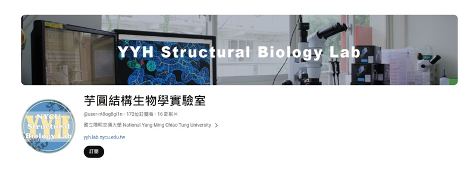
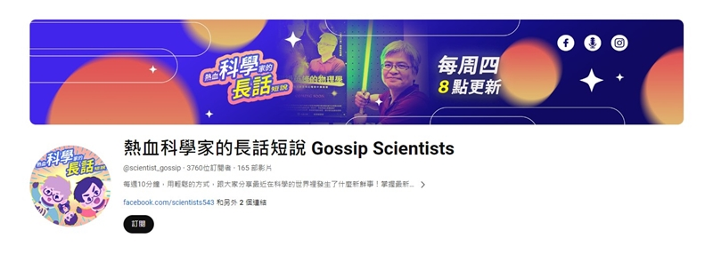
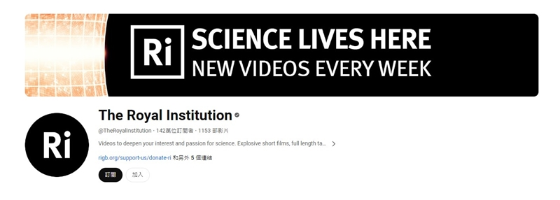

Useful Links
| Tool / Resource | Description |
|---|---|
| Multi-crystal Data Collection | Provides guidelines for evaluating data quality and estimating the optimal number of crystals required for multi-crystal data collection strategies. |
| X-ray Absorption Edges & Anomalous Scattering | Interactive periodic table interface for retrieving X-ray absorption edges and anomalous scattering coefficients. |
| Experimental Phasing (Phenix) | Comprehensive guidelines and tutorials for solving SAD/MAD structures using the Phenix software suite. |
| Matthews Coefficient (Vm) Calculator | An online tool provided by WFU for calculating the Matthews coefficient and estimating the solvent content of protein crystals. |
| Hampton Research | Supplier of crystallization screens, reagents, and hardware for macromolecular crystal growth. |
| MiTeGen | Provider of advanced crystal mounts, loops, and sample handling tools for X-ray crystallography. |
Recommended Channels


